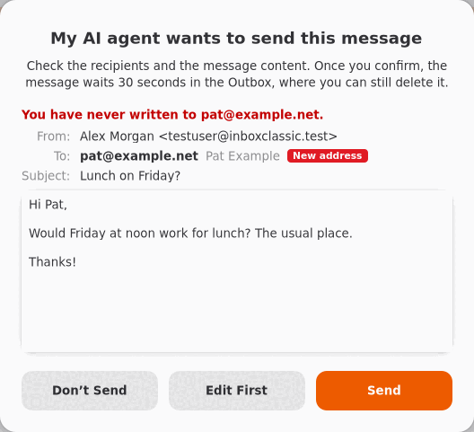

에이전트가 메일을 보낼 때
AI 에이전트가 보내려는 모든 메시지는 먼저 사용자에게 표시되고, 보내지기 전에 보낼 편지함에서 대기합니다.
에이전트는 사용자가 허용한 경우에만 메일을 보낼 수 있으며, 메시지마다 사용자가 승인한 후에만 보냅니다.

에이전트가 메시지를 보내려고 하면 Inbox Classic이 모든 받는 사람을 주소와 함께 표시하여 메시지를 보여 줍니다. 한 번도 메일을 보낸 적이 없는 주소에는 새 주소 표시가 붙습니다.
- 받는 사람과 본문을 읽습니다.
- 다음 중 하나를 선택합니다.
- 보내기 단추는 메시지를 보내기 대기열에 넣습니다. 실수로 승인하는 일을 줄이기 위해 이 단추는 잠시 후에 사용할 수 있게 됩니다.
- 먼저 편집 단추는 메시지를 새 메시지 창에서 열어 직접 고칠 수 있게 합니다.
- 기본값인 보내지 않음 단추는 메시지를 보내지 않습니다.
에이전트는 한 번에 한 메시지에 대해서만 묻습니다. 답하는 데 시간이 걸리면 에이전트에게 메시지가 사용자의 결정을 기다리고 있다고 알리며, 에이전트는 나중에 결정을 물어볼 수 있습니다. 기본적으로 에이전트가 작성한 메시지와 초안 끝에는 사용자가 쓴 메시지처럼 서명이 붙지만, 에이전트가 서명을 뺄 수도 있습니다.
승인된 메시지는 보내기를 시도하기 전에 보낼 편지함에서 30초 동안 대기합니다. 기록에는 배달 완료가 아니라 보내기 대기열에 넣은 사실이 기록됩니다. 메시지가 보낼 편지함에 남아 있는 동안에는 30초가 지난 후에도 그곳에서 삭제하거나 도구 > AI 에이전트 창에서 실행 취소 단추를 클릭할 수 있습니다.
초대에 대한 응답
메일 보내기 권한이 있는 에이전트는 같은 확인 질문을 통해 사용자 대신 일정 초대를 수락, 미정으로 수락 또는 거절할 수 있습니다. 질문의 본문 위에는 메시지가 어떤 초대에 대한 응답인지와 일정의 시간이 표시됩니다. Inbox Classic은 초대 자체의 정보로 주최자에게 보낼 응답을 작성하므로, 메시지를 먼저 열어 고칠 수는 없습니다. 응답마다 승인이 필요하며 계정의 서명 텍스트는 붙지 않습니다. 메일 서버가 응답을 받아들이면 이 컴퓨터의 응답 상태가 바뀌지만, 주최자의 일정에서 확인된 것은 아닙니다.
에이전트가 작성한 초안
에이전트가 작성한 초안를 열면 메시지 위의 줄에 에이전트 이름이 표시됩니다. 보내기 전에 받는 사람과 본문을 확인하십시오.

에이전트는 사용자가 편집기에서 저장하기 전까지 자신이 작성한 초안을 바꾸거나 삭제할 수 있습니다. 자동 저장도 저장에 포함됩니다. 저장한 후에는 사용자가 초안을 관리합니다.